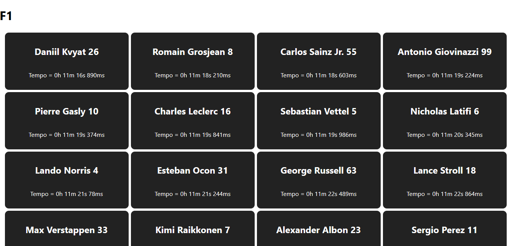
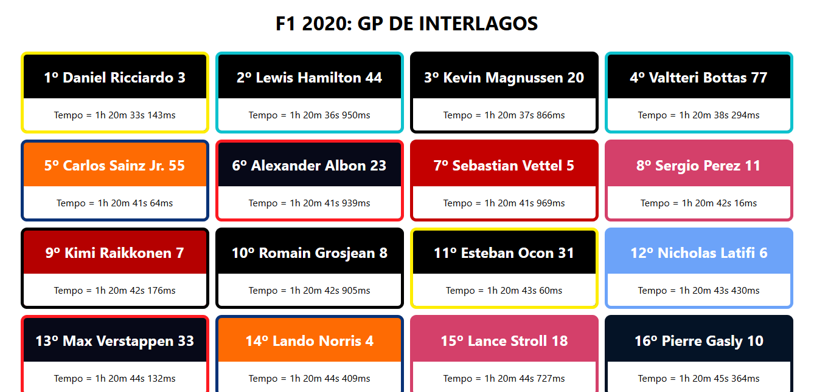

F1 React
Status: Otimizando
Ver Código TestarO que me levou a construir o projeto?
Bom, por eu ter começado a acompanhar Fórmula 1 em 2020, fiquei animado em tentar me aproximar de alguma forma desse mundo, aí tive a ideia de construir um simulador que fosse realista o suficiente para chegar nos números de uma classificação da Fórmula 1. Inicialmente fiz em C, onde podem conferir aqui mesmo no github, meu repositório.
Mas apesar de ser funcional o programa não era muito visual, então logo nas primeiras aulas de um curso de React, vi que era possível conciliar técnicas de CSS3 e HTML5 em conjunto com funções em JS, o que torna viável a construção do simulador em React. Desde então passei a construir o meu primeiro projeto em React, o f1-react.
Introdução
O projeto consiste em um simulador de corrida, em que apliquei informações em uma fórmula de velocidade média, onde pretendo sempre descobrir o tempo em que um carro leva para completar a volta.
Desenvolvimento
Como estava aprendendo o conceito de componentes em React vi que a herança entre componentes era algo incrível e que abria muitas possibilidades. Então comecei a pensar em uma forma de aproveitar essa funcionalidade do React para construir uma aplicação.
Criei um componente pai chamado “pista” onde ele recebe todo o cálculo da velocidade média, onde eu adicionei o tamanho da pista em que a corrida é realizada, no caso Interlagos no Brasil, que tem 4309 metros. Ainda em relação ao cálculo levei em consideração a melhor volta já registrada na pista que é de aproximadamente 1m7s. Baseado nisso adicionei uma velocidade média que resultasse em um tempo semelhante a este.
Os resultados do cálculo são enviados para o componente filho que se chama “piloto”, onde é realizada uma conversão de tempo e é exibido em forma de card as informações do piloto e o seu tempo.
Depois que o resultado mostrou-se promissor, adicionei outro piloto, então precisei tornar variável a velocidade entre os dois para que eles não chegassem juntos no final da corrida. Mantendo uma margem de erro de 10 km/h, os pilotos agora passaram a chegar com tempos diferentes.
Precisei armazenar as informações dos pilotos de forma que fosse possível reorganiza-los caso necessário, inicialmente tentei array, mas não existia uma relação entre as próprias informações de um piloto então seria complexo mudá-las de posição, então pensei em JSON, depois de pesquisar e realizar alguns testes, fiz um array de JSON.
Agora com as informações de cada piloto armazenadas era possível organizá-las de acordo com a ordem de chegada, para isso utilizei uma função de ordenação que era disponibilizada pelo próprio JS.
Com o JSON ordenado pela ordem de chegada as informações da pista são passadas para o piloto, uma grande dificuldade do projeto foram as imagens. No React é necessário importar a imagem para depois utilizá-la, então tive que importar as imagens no componente “pista” e estabelecer os valores no JSON, e depois enviá-lo ao componente “pista” dessa forma ele sempre recebe o caminho correto da imagem independente de onde esteja rodando.
Perícia
Porém os resultados são 100% aleatórios e qualquer piloto pode vencer. Com o objetivo de deixar o projeto mais realista, observei o resultado real de todos os pilotos durante as 13 corridas disputadas até aqui em 2020.
Então adicionei o conceito de “perícia”, onde eu tirei a média da posição de chegada de todos os pilotos. Em que o piloto com a menor média é o parâmetro principal, no caso Lewis Hamilton com a média de 1,92.
Hamilton recebeu a perícia base de 6, e os demais pilotos receberam a perícia base menos sua diferença com relação a média de Hamilton, dividido por 10.
Exemplo: Bottas tem uma média de 4,3. Então a diferença dele para Hamilton é de 2,38. Dividimos por 10, e temos o resultado de 0,238. Então subtraímos esse valor da perícia base que é 6, e temos a perícia de Bottas que é de 5,762.
A partir de então adicionei os 20 pilotos em um total de 71 voltas, fiz algumas modificações a nível de CSS3 para tornar a exibição dos resultados mais agradável.

Conclusão
O projeto consegue simular o resultado dos 20 pilotos em 71 voltas no circuito de Interlagos, e exibe de forma clara o resultado final da corrida, com as imagens e cores dos respectivos pilotos e equipes. Você pode conferir o resultado.
Tecnologias
- React
- JavaScript
- HTML5
- CSS3
Aprendizado
- Props
- Array JSON
- Componentes
- Estilização de Componentes
Estado do projeto: Otimizando
- Adicionar o fator motor nos carros para tornar o sistema mais realista.
- Construir uma API para armazenar os dados e consumi-la.